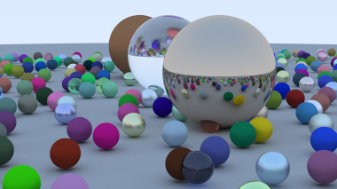

Terminal Music Player
Reproductor de Música
A very simple music player that works in the terminal, with no internal library, relying only on the audio files themselves.
Un reproductor de musica muy simple, para la terminal. No mantiene una libreria propia, si no que saca la info. de los archivos de audio.
06-03-2024
Ray Tracing in One Weekend
Ray Tracing en un fin de semana
A ray tracer written in rust, following the Ray Tracing in One Weekend book.
Un ray tracer escrito en rust, siguiendo el libro Ray Tracing in One Weekend.
09-04-2023
Minesweeper
Buscaminas
The classic game, playable in your browser, even with just a touch screen. There's a few themes to choose from, too!
El típico Buscaminas, jugable en tu navegador, también con pantalla touch. Hasta puedes elegir temas!
10-04-2021
TIC-80 Raycaster Demo
Demo de Raycaster en TIC-80

A simple raycasting engine made by following 3Dsage's tutorial, and then adding a few more features myself.
Un raycaster simple hecho según el tutorial de 3Dsage, con un par de cosas extra mías.
25-02-2021
Orange Guidance Soapstone
Saponita Naranja

In the Internet, the flow of time is distorted, and messages allow Undead to assist (or deceive) one another.
An image generator for Dark Souls-style messages that you can then post elsewhere.
Only missing options from Dark Souls 2
En Internet, el flujo del tiempo está distorsionado, y estos mensajes permiten a los No Muertos ayudarse (o engañarse) entre si.
Un generador de imágenes de mensajes como los de de Dark Souls, para copiar y pegar algún otro lado.
Solo faltan opciones de Dark Souls 2
08-08-2020
Dweller's Colorful Path

A recreation of the start of Temmie Chang's Dweller's Empty Path, using her unused assets.
Una recreación del inicio de Dweller's Empty Path, un juego por Temmie Chang, usando los recursos que ella no usó.
31-07-2020